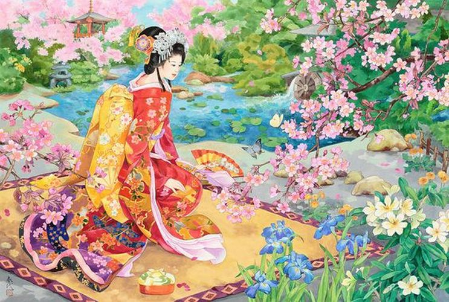

+38(063)855 25 02
+38(063)855 25 02 Городоцька, 174
Городоцька, 174Медитація омолодження «Аромат Весни»
Кожна пора року має свій аромат. Це не тільки запах - це притаманні тільки йому кольори краєвиду, звуки, тактильні відчуття, і звичайно ж - настрій. Весна - це активація всіх органів чуття, всіх видів енергії в тілі (і в першу чергу сексуальної), це активація залоз внутрішньої секреції, котрі направляють всі фізіологічні процеси в тілі в більшій мірі на ріст, оновлення, регенерацію.
Цю особливість помітили даоси і знайшли способи її використання протягом цілого року. Це практики омолодження, розвиток чуттєвості і чутливості, починати котрі краще весною. Одна з них - це медитація «Аромат Весни»
В чому вона полягає? Нам потрібно створити свій особистий «Аромат Весни». А далі - змогти його відтворити в будь-який час, будь-де. Виконується вона за сезон 5-6 разів, для того щоб добре все запам'ятати.
В сонячний день до полудня виходимо в ліс або парк. Має бути тепла погода. Налаштовуємось на сприйняття навколишнього світу і на задоволення від сприйняття. Починаємо з того, що вдивляємося у все навкруги: землю, траву, небо. Ключовий момент - вловлюємо всі запахи: випари землі, дерев. Дослухаємось до лісних шорохів і звуків: шелест листочків, що розпускаються; співи птахів, шурхіт мурашника. Відчуваємо шкірою тепло сонця і подих вітру. Вбираємо відчуття всім тілом, використовуючи для цього всі органи чуття. В той же час, спробуйте зрозуміти який внутрішній відгук викликають у вас ці відчуття, з яким станом ви пов'язуєте весну. Можливо це стан закоханості, який вас окриляє. Можливо це стан піднесення, натхнення або відчуття величезного потенціалу, котрий зріє в тілі і прагне вирватися назовні. Або це прагнення до змін і до всього нового. Запам'ятовуйте це все. Особливо запам'ятайте запах. Зв'яжіть запах і ваш внутрішній стан. Це і буде ваш особистий «Аромат Весни». Дома виконайте медитацію: згадайте всі свої відчуття і переживання. І увійдіть в стан Весни. Тепер ваша весна завжди з вами і ви можете насолоджуватися нею весь рік.
Завдяки цій практиці ми вчимося бачити, чути, відчувати те, на що раніше не звертали уваги. Вчимося якомога точніше запам'ятовувати образи, колір, звук і запах, відтворювати всі відчуття по пам'яті. І входити в особливий стан підвищеної енергетичної готовності, стан молодості і весни.
Вхід у стан - це найважливіше. Саме через нього ми впливаємо на залози внутрішньої секреції, направляючи їхню роботу на оздоровлення і омолодження. Це найбільш безпечний шлях впливу на наш гормональний статус, навідміну від лікарських засобів. Завдяки цьому стану ви отримуєте енергію ніби нізвідки - просто із своїх спогадів.
Це ще й прекрасний спосіб боротьби з непродуктивними станами. Коли вам важко, коли у вас опускаються руки або сумно і тужливо - згадайте про внутрішню весну. Ви здивуєтесь змінам, що відбулись!
Це розвиток всіх органів чуття, пам'яті, мозку. Вони або розвиваються людиною, або з часом самі по собі деградують.
Ми з'єднюємо відчуття навколишнього світу із задоволенням, тобто з'єднюємо сприйняття органами чуття з сексуальною енергією і виходимо на новий рівень сприйняття. Ми перетворюємо чутливість в чуттєвість. Це прекрасне застосування сексуальної енергії для самовдосконалення і управління власним тілом і енергією!
Джерело: Цигун Shou Tao Київ
Інструктор: Світлана Герасимчук
Навчання у Львові проводяться за адресою: вул. Городоцька, 174 (мотозавод)
Запис на тренування: Тел./Telegram/Viber: +38 (063) 855 25 02